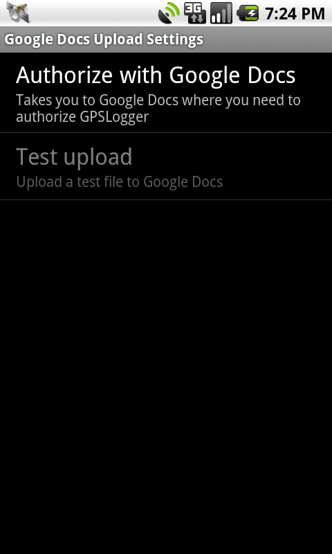
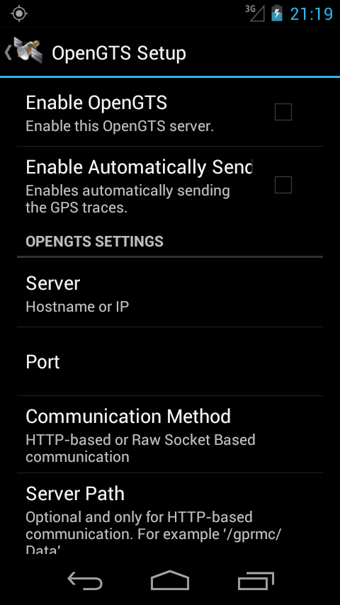
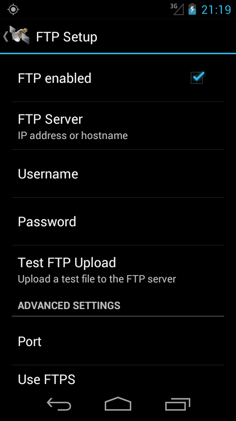
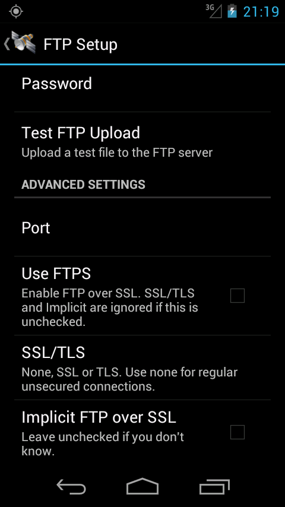
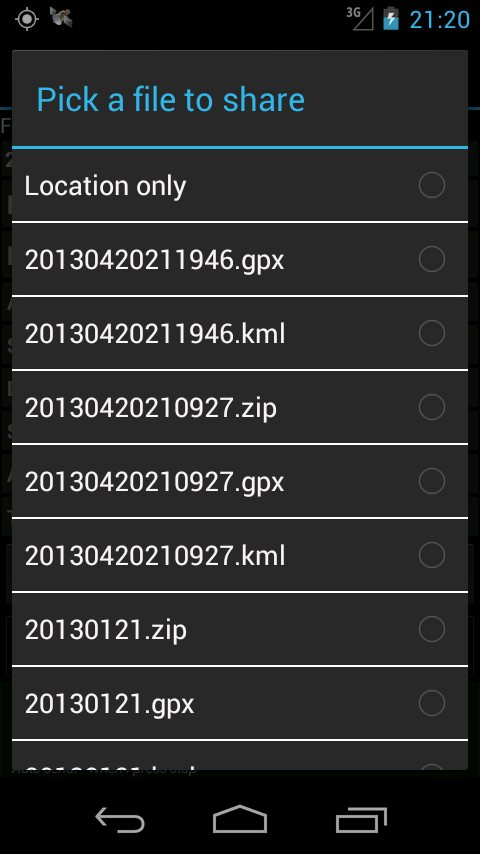

GPSLogger For Android
Description
A battery efficient GPS Logger application for Android. Works on Android 2 onwards.
GPSLogger uses the GPS capabilities of your Android phone to log coordinates to a GPS or KML file at regular intervals. This can be particularly useful if you want to geotag your photos after a day out or share your travel route with someone. The purpose of this application is to be battery efficient to save you battery power when abroad and last as long as possible.
You can also download the APK directly here.
Features
- Can log to GPX, KML, CSV formats. Can also log to a custom URL or just the screen.
- Logs GPX points as tracks and track segments
- Also logs speed, direction and altitude if available
- Add a description to a point using the annotate menu
- Configure time intervals between points
- Configure a minimum distance filter between points or an accuracy filter
- Notification icon with coordinates
- Uses cell towers for location when GPS is disabled
- Prefer cell tower based location over GPS to save even more battery life
- Changes you make on the settings screen will take effect after the next point is logged
- Automatically upload or email the file at set intervals to destinations such as Email, FTP, Dropbox, Google Docs, OpenStreetMap.
- Share location or log files via SMS/Email (and other apps such as Facebook or Twitter depending on what you've got installed)
- You can have it start logging on phone bootup
- You can launch Start and Stop shortcuts from Tasker or other automation apps.
Frequently asked questions
It's taking a long time to find a fix!
There can be several reasons reasons for this.
- New location - if you are at a new location after a long flight, the GPS on your phone can take a while to reorient itself. Try running GPSLogger at high frequency until it does find a location.
- Interference - there may be structures nearby blocking your signal.
- Mid flight - if you are in a commercial aircraft, you are probably traveling too fast for your phone's hardware to keep up with the GPS signals.
The gist of a phone using GPS is that it needs to know where every satellite in the GPS constellation is and it usually wants to use your data connection to do this. The GPS satellites do broadcast this information at different intervals; specifically, each satellite broadcasts almanac data and ephemeris data.
The almanac is not very precise and gives a rough overview of the constellation and their positions over the next few months. A GPS receiver can use this to get a rough idea of where it is and which satellites to select. When a phone has been off for a long time, or suddenly shifted to a new location, it needs to reacquire almanac data.
The ephemeris data is more precise; it is broadcast more frequently and goes stale quite quickly. It's only once a GPS receiver has its almanac data that it knows to look for the ephemeris data. Once the phone has both of these pieces of information, it can then figure out where it is. This process can take around 12 minutes and is known to be very flaky; any interference or interruption in the process means that the GPS receiver in the phone needs to start over. The satellites only broadcast at 50 bytes/second.
Because it takes so long, to assist with this, many mobile operators deploy aGPS servers; these servers have already downloaded the almanac and ephemeris data and your phone can download it from them at a faster rate then from the satellites. But it does mean that your phone has to be on a familiar network. Being on roaming or with a restricted data plan will prevent this from happening.
All in all, there are a lot of factors at play. The problem could be anything from missing almanacs to data to hardware. GPSLogger simply waits for the OS to be ready with its information.
It's not accurate!
It all comes down to your hardware, settings and environment. The accuracy is only as good as your phone's GPS chip. Some phones may have 4 meter accuracies, some have 500 meters. Also, using GPS satellites will give you better accuracy but take a longer time; using network location will give worse accuracy but is quicker. You may also want to check your environment, as there can be inaccuracy due to clouds, buildings, sunspots, alien invasion, etc.
My time interval has passed, but no point was logged
There are two possible reasons for this.
- The GPS will have attempted to find its location and given up after a while. This means that Android OS will not have given a location to GPSLogger
- The accuracy was below your Accuracy filter settings, or the distance was below your Distance filter settings, so GPSLogger didn't log it. You can try setting a Retry interval in which GPSLogger can wait for a more accurate point to show up and then use it.
It's using the wrong timezone, can you make it use my timezone?
The standard when logging points is to use UTC. Since this is the standard, it would be wrong to use the the local time zone. Instead, it is the responsibility of the software you use the log file on (Google Earth, GeoSetter, etc.) to adjust for your timezone. Any application that deals with GPX or KML files will have a setting that allows you to specify your own timezone.
I am displaying imperial units but why isn't it logging imperial to the file?
What are the units in which the values are logged?
The imperial units are only for display purposes and nothing else. When logging, the units are always in SI units - meters and seconds.
Where is the file being logged? How do I get to it?
You can connect your phone to your computer and mount the SD card, then copy the file from the GPSLogger folder. That's the default folder, but you can change it in the settings. Note that while your SD card is mounted, GPSLogger can't write to the card, since it's in use. To view it on the phone itself, if you have a file explorer, then you can go to /sdcard/GPSlogger > Long press file > Open as > Text
I've changed the settings, but it's still showing/using the old settings
If the app is logging, and you make changes to the settings, the changes will take effect after the next point is logged. This means that if you've set your interval as 1 hour, you have a long wait ahead of you. If you want the changes to take effect immediately, then stop logging and start it again so that the changes are refreshed.
What do the various settings mean? (Accuracy before logging, time interval for accuracy, etc)
- Time before logging - How long to wait after a point has been logged to try logging again.
- Distance filter - When a point is available, the app will check to ensure that this much distance exists between the previous and current points. If it isn't this distance, the point is discarded.
- Accuracy filter - When a point is available, the app will check to ensure that this point has a minimum accuracy specified. If it does not match the specified accuracy, the point is discarded. This is useful if you are inside a building for a while.
- Time interval for accuracy - When searching for a point, the app can continue searching for this many seconds until it finds a point that meets the accuracy and distance filter criteria above.
Can I use this with automation apps such as Tasker, Locale and Llama?
GPSLogger provides a Start logging and Stop logging shortcut. Your automation app can invoke these shortcuts.
How do I make it last longer?
Mainly, turn wifi off, turn mobile data off, turn background synchronization off, turn bluetooth off. If you turn data off, you'll probably want to inject aGPS data regularly, there are apps that can do it for you. You can also try going into airplane mode which turns many things off. When it comes to choosing between location sources - GPS vs network - GPS will be more battery hungry while network location is easier on the battery.
I see the Android GPS icon active between the intervals I've set, why is that?
It's how the Android OS has implemented its GPS system. When you say you want a point every 60 seconds (for example), that's actually a suggestion rather than an imperative, and so the time interval between GPS points is never guaranteed. GPSLogger has logic that checks the time difference, though, and will make sure that at least 60 seconds have passed before logging again.
Why can't I remove the notification?
As of newer versions of Android, removing the notification will cause the service to be killed. As a result, the notification now needs to stay there. You may have seen a recent increase in the number of apps that need to sit in the notification bar for the same reason - to perform background services without being killed.
Why haven't you developed XYZ feature?
I work on GPSLogger in my spare time and I don't always have the time or resources to implement a feature. However, GPSLogger is open source. You are encouraged to contribute or get someone else to contribute a feature.
Where can I contribute code and features?
On Github
Where can I contribute translations?
On Crowdin
How is this different from other logging apps?
It's meant to be more battery efficient. A lot of other apps, such as MyTracks, usually go with the assumption that you have a data connection available and your routes won't be very long. They use CPU wakelocks and log points extremely frequently with high accuracy. The aim of GPSLogger is to log points and stay quiet.
How do I download it?
Search for GPS Logger for Android in Google Play, or follow this direct link.
How do I download it without using the Android market?
You can download the APK file here.
Bugs, issues, code?
You can add issues and view the source code at github.com/mendhak/gpsloggerScreenshots
Main screen


Settings screen


Auto Email Setup screen


OpenStreetMap Setup screen

Dropbox Setup screen

Google Docs Setup screen

OpenGTS Setup screen

FTP Setup screen


Sharing options

Notification area

Download
Download from the Android Market

Source Code
Get the source code on GitHub: mendhak/gpslogger